Your complete gateway to exploring the Dark Knight's most iconic stories, unforgettable villains, and legendary appearances across all media. Immerse yourself in the rich tapestry of Batman's universe - from groundbreaking graphic novels that redefined superhero storytelling, to cinematic masterpieces that brought Gotham to life on the silver screen, to award-winning animated series that captivated generations. Whether you're a lifelong fan or just beginning your journey into the shadows of Gotham City, discover the tales that transformed Bruce Wayne into the world's greatest detective and most enduring symbol of justice.
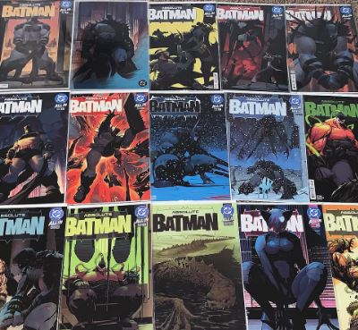
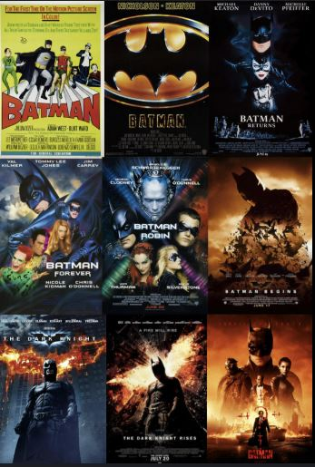
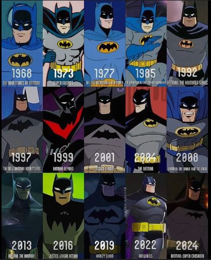
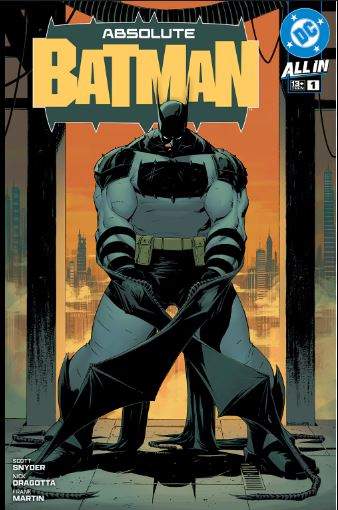
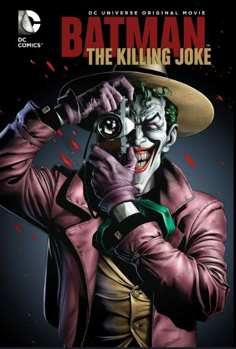
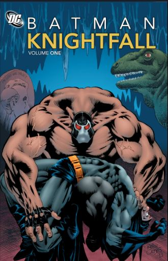
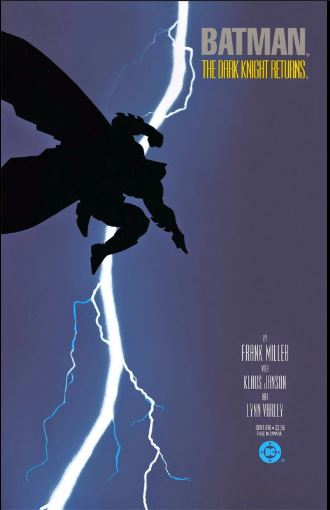
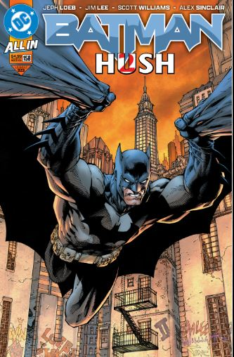
Description will appear here.
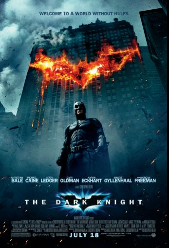
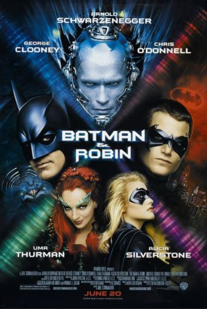
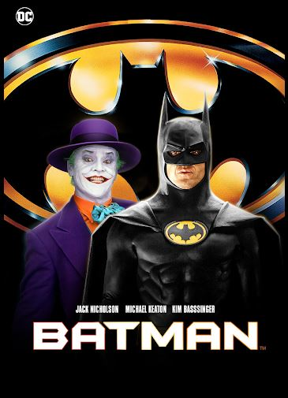
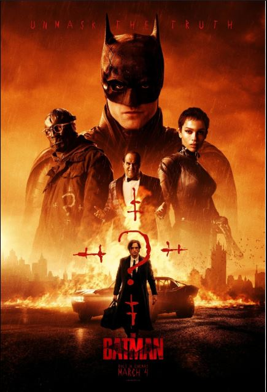
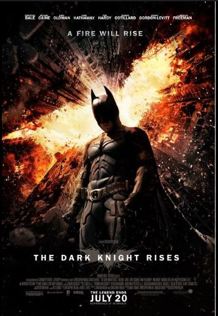
Description will appear here.
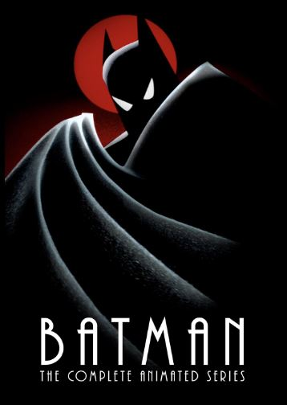
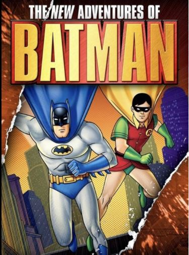
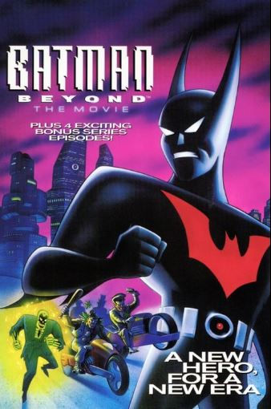
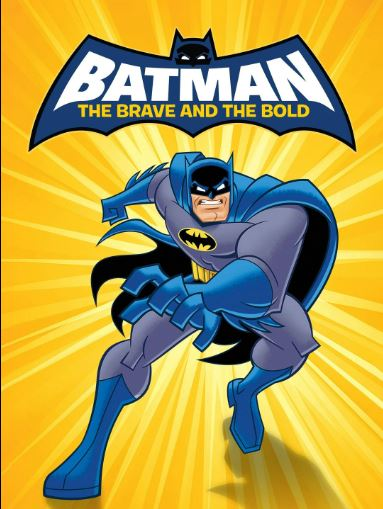
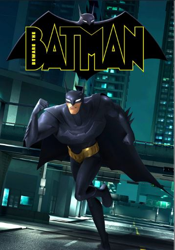
Description will appear here.
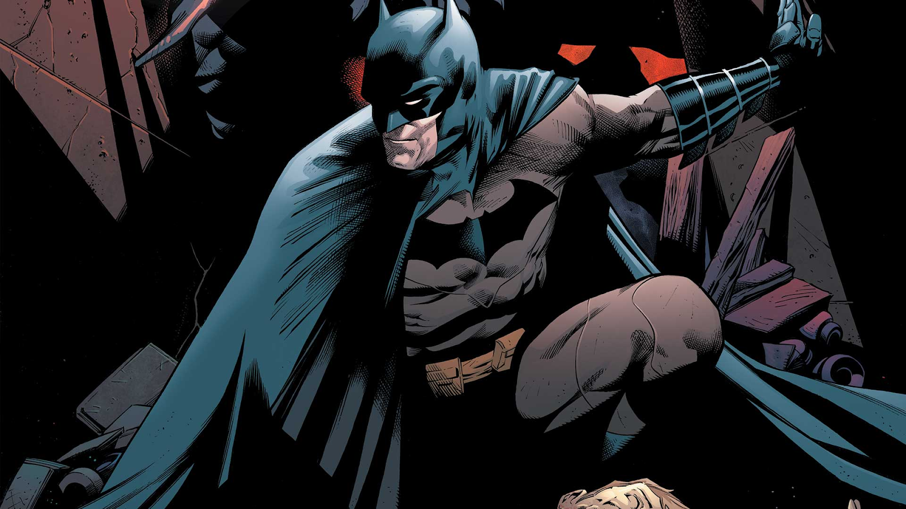
Batman
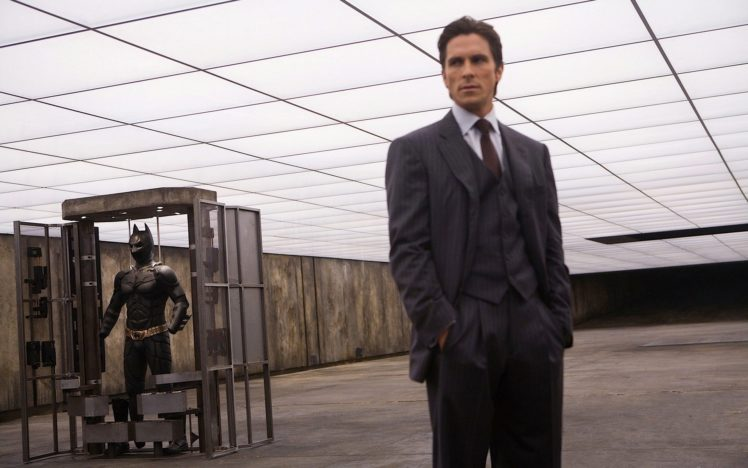
Bruce Wayne
Bruce Wayne witnessed the murder of his parents, Thomas and Martha Wayne, in Crime Alley when he was just eight years old. This traumatic event shaped his entire life and set him on the path to becoming Batman.
After years of training around the world in various martial arts, detective techniques, and sciences, Bruce returned to Gotham City. He chose the bat as his symbol to strike fear into the hearts of criminals, transforming himself into the Dark Knight.
Operating from the Batcave beneath Wayne Manor, Batman wages a one-man war on crime, refusing to kill but using fear, intelligence, and cutting-edge technology to protect Gotham City from its darkest threats.
Bob Kane - Credited as Batman's creator, Kane was the artist who first designed the character in 1939. However, historical records show that his original design was significantly different from the Batman we know today.
Bill Finger - For decades uncredited, Bill Finger was the true creative force behind Batman. He conceived most of Batman's key elements including the costume design, Gotham City, the Batcave, and many iconic villains like the Joker, Penguin, and Riddler. Finger also wrote most early Batman stories that established the character's dark, detective noir tone.
In recent years, DC Comics has officially recognized Bill Finger's contributions, now crediting both Kane and Finger as Batman's creators. Finger's legacy as a foundational architect of the superhero genre continues to influence Batman stories today.
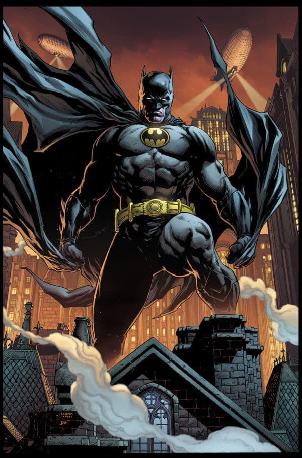
"This should be agony. I should be a mass of aching muscle. But I'm a man of thirty, of twenty again."
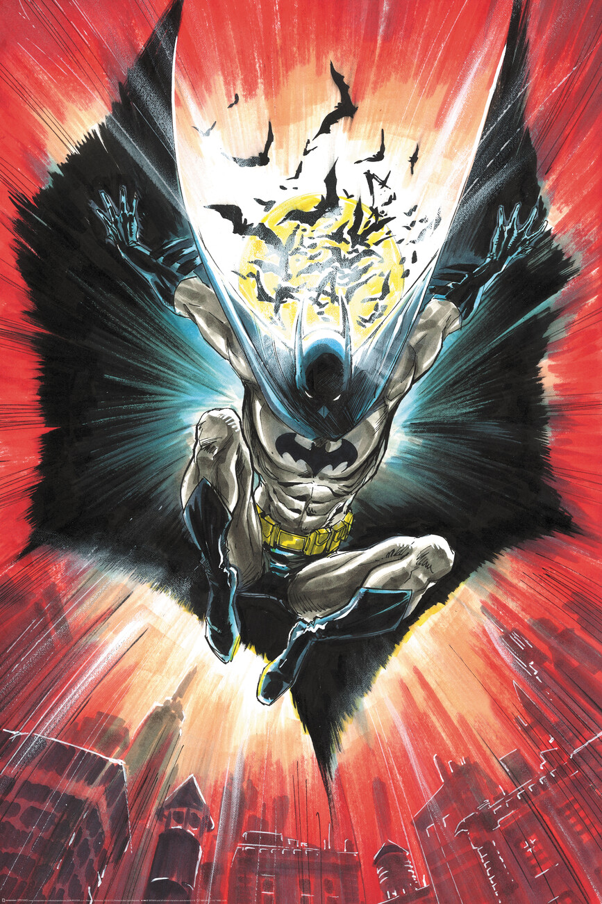
"I am vengeance. I am the night. I am Batman!"
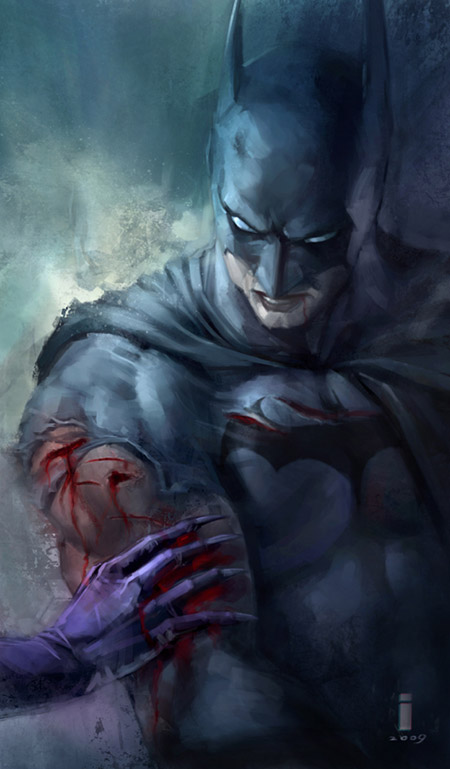
"It's not who I am underneath, but what I do that defines me."
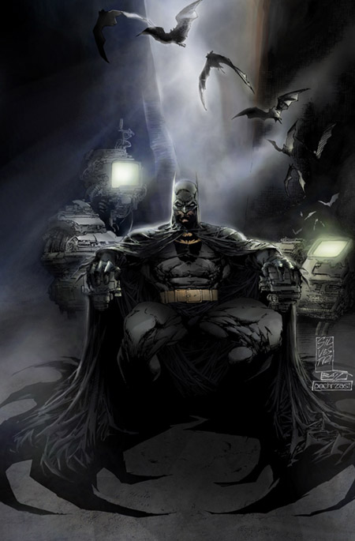
"You either die a hero, or live long enough to see yourself become the villain."
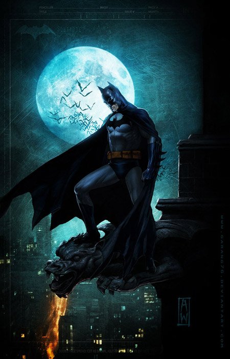
"The night is darkest just before the dawn."
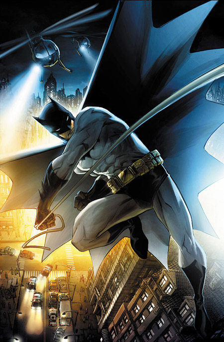
"Sometimes it's only madness that makes us what we are."
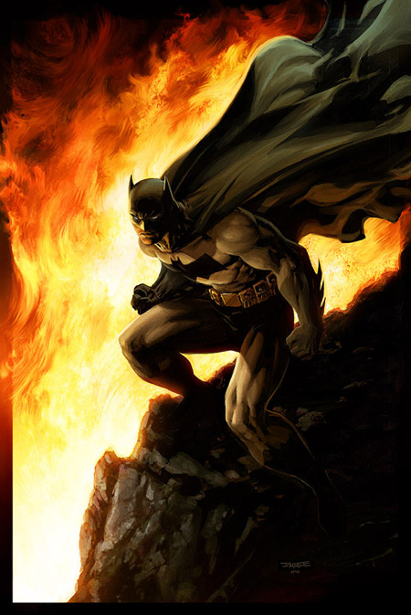
"A hero can be anyone, even a man doing something as simple as putting a coat around a young boy's shoulders."
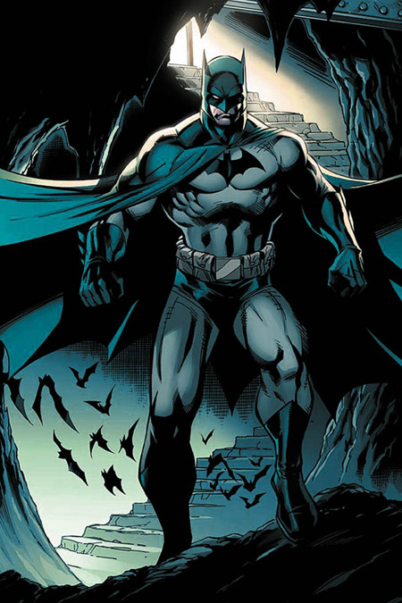
"Why do we fall? So we can learn to pick ourselves up."
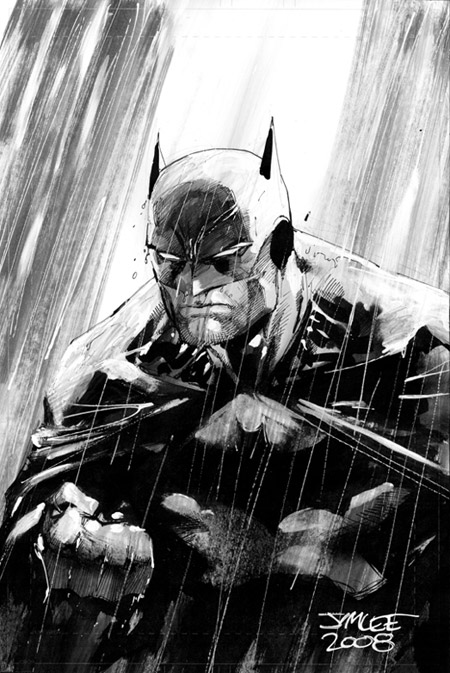
"I wear a mask. And that mask, it's not to hide who I am, but to create what I am."
Help us improve the Batman Universe website with your comments and suggestions